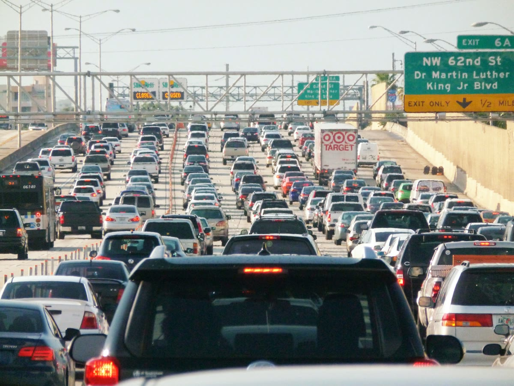

CHECK EVERY DRIVER. SORT THEM ALL.
DRIVER #1 — 4.2mi
DRIVER #2 — 1.8mi
DRIVER #3 — 6.1mi
... 49,997 MORE
Checked so far
0
every one. every second.
DOESN'T SCALE.
real Miami rush-hour traffic, I-95 · not a stock icon